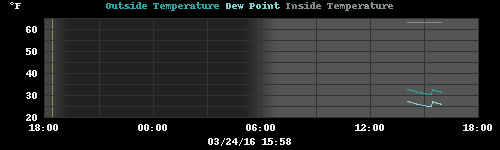
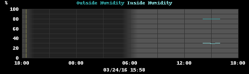
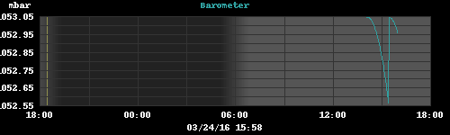
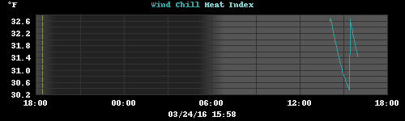
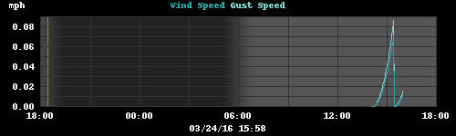
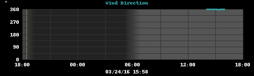
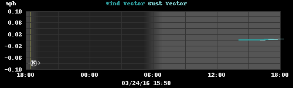
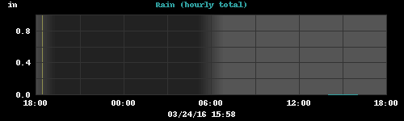
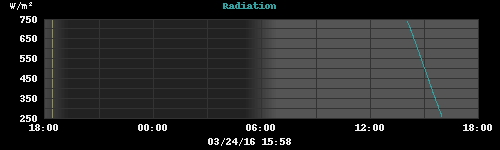
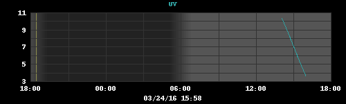

| ACTUAL | HI/LO | ||||||
| Temperature | 31.4 | 31.4 31.4 |
32.7 30.3 |
°F | |||
| Humidity | 80 |
80 80 |
% | ||||
| Dewpoint | 26.0 |
27.2 24.8 |
°F | ||||
| Barometer | 1053.0 |
1053.0 1052.6 |
mbar |
||||
| Wind |
|
0 0 avg |
mph |
||||
| Precipitation | 0.00 |
0.00 0.00 |
in/hr in |
||||
| UV | 3.6 |
10.4 3.6 |
|||||
| Temperature Inside |
63.1 |
63.3 63.0 |
°F | ||||
| Humidity Inside |
30 |
30 29 |
% | ||||
| TODAY | MONTH | YEAR | ||
| High Temperature: | 32.7 02:02:41 PM |
32.7 03/04/2016 |
32.7 03/04/2016 |
°F |
| Low Temperature: | 30.3 03:23:58 PM |
30.3 03/24/2016 |
30.3 03/24/2016 |
°F |
| High Humidity: | 80 02:02:41 PM |
80 03/04/2016 |
80 03/04/2016 |
% |
| Low Humidity: | 80 03:23:58 PM |
80 03/24/2016 |
80 03/24/2016 |
% |
| High Dewpoint: | 27.2 02:02:41 PM |
27.2 03/04/2016 |
27.2 03/04/2016 |
°F |
| Low Dewpoint: | 24.8 03:23:58 PM |
24.8 03/24/2016 |
24.8 03/24/2016 |
°F |
| High Barometer: | 1053.0 02:02:41 PM |
1053.0 03/04/2016 |
1053.0 03/04/2016 |
mbar |
| Low Barometer: | 1052.6 03:23:58 PM |
1052.6 03/24/2016 |
1052.6 03/24/2016 |
mbar |
| High Heat Index: | 32.7 02:02:41 PM |
32.7 03/04/2016 |
32.7 03/04/2016 |
°F |
| Low Wind Chill: | 30.3 03:23:58 PM |
30.3 03/24/2016 |
30.3 03/24/2016 |
°F |
| High Wind Speed: | 0 03:23:58 PM |
0 03/24/2016 |
0 03/24/2016 |
mph |
| Ave Wind Speed: | 0 | 0 | 0 | mph |
| High Rain Rate: | 0.00 02:02:41 PM |
0.08 03/05/2016 |
0.08 03/05/2016 |
in/hr |
| Rain Total: | 0.00 |
0.15 | 0.15 | in |
| INSIDE | ||||
| High Temperature: | 63.3 03:23:58 PM |
63.3 03/24/2016 |
63.3 03/24/2016 |
°F |
| Low Temperature: | 63.0 02:02:41 PM |
63.0 03/04/2016 |
63.0 03/04/2016 |
°F |
| High Humidity: | 30 02:02:41 PM |
30 03/04/2016 |
30 03/04/2016 |
% |
| Low Humidity: | 29 03:23:58 PM |
29 03/24/2016 |
29 03/24/2016 |
% |









